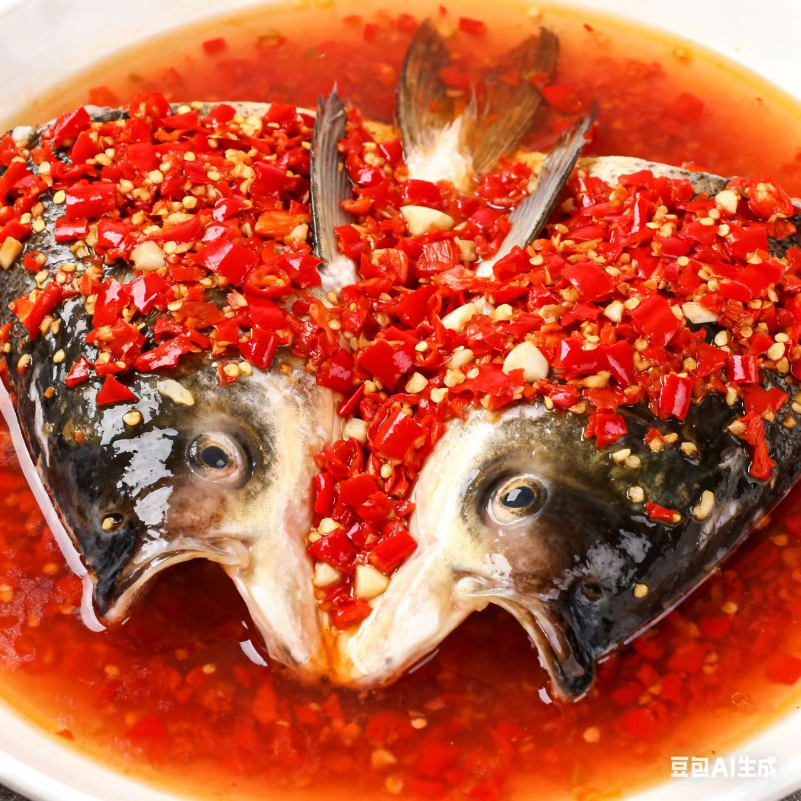
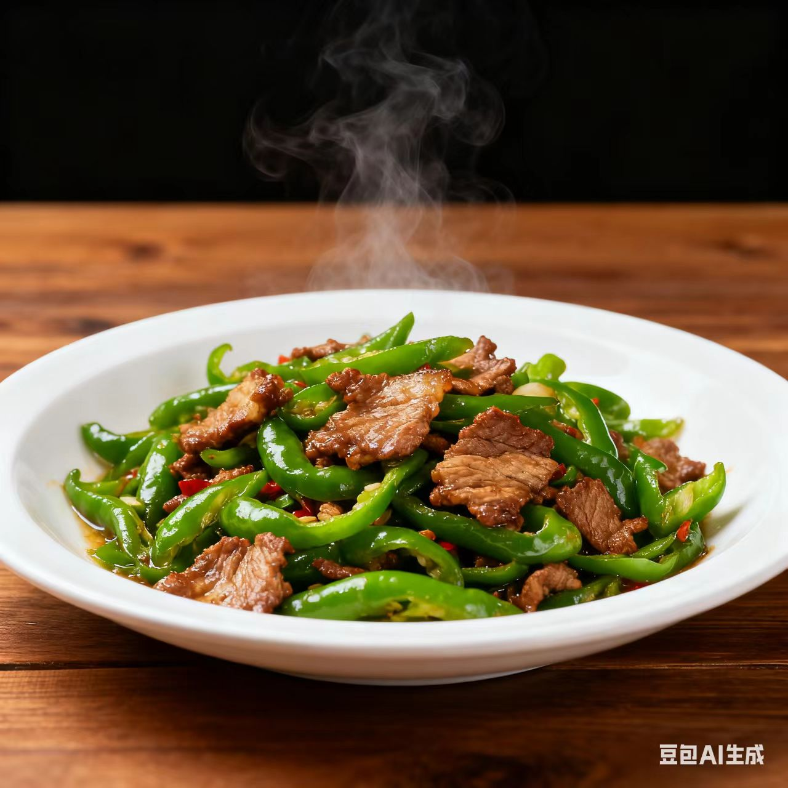

湘菜 · xiang Cuisine
香辣鲜醇里的湖湘豪情与烟火热辣
一、起源与历史
湘菜发源于湖南（古楚地），战国时已有“食辣”雏形，明清融合湘江流域、洞庭湖区、湘西山区风味，形成“香辣醇厚”的体系，烹饪思想强调“味浓色重、酸辣适口”，讲究“辣而不燥、鲜而不腥”的平衡
二、地理与气候影响
湘菜发源于湖南（古楚地），战国时已有“食辣”雏形，明清融合湘江流域、洞庭湖区、湘西山区风味，形成“香辣醇厚”的体系，烹饪思想强调“味浓色重、酸辣适口”，讲究“辣而不燥、鲜而不腥”的平衡
三、主要烹调技法
- 炒
- 爆
- 腊
- 熏
- 熘
每种技法都重“入味提香”，如小炒快火锁鲜，腊制熏香浓郁，煨菜醇厚绵长
四、代表菜肴
-
剁椒鱼头

-
辣椒炒肉

-
腊味合蒸

五、风味与审美
湘菜的独特在于“以辣为骨、以鲜为肉、以酸为韵”，追求香辣开胃、醇厚过瘾的味觉体验，味觉逻辑体现了湖南人“豪爽耿直、热辣鲜活”的性格特质
六、文化意象
湘菜不仅是饮食，更是湖湘“敢为人先、经世致用”文化的载体——从农家宴席的“十大碗”到街头的“嗦粉摊”，湘菜承载了“烟火气里的豪情”与“山水间的热辣生命力”
七、地方俗语
无辣不成席，无鱼不成宴（湘菜）
湖南人不怕辣，辣不怕，怕不辣
拓展视野：视频
拓展视野：学术资料
| 研究论文 / 报告名称 | 链接 |
|---|---|
| 《湘菜饮食文化的湖湘精神内核》 | 查看论文 |